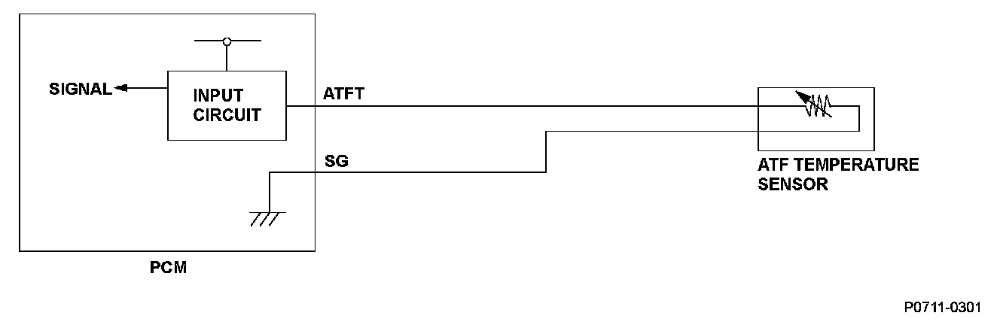
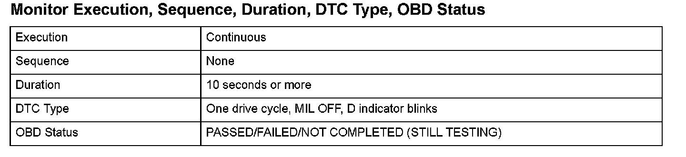
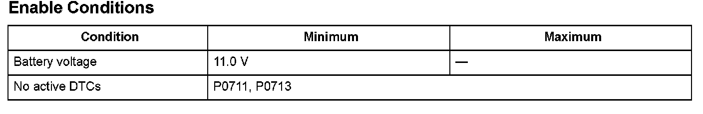

Advanced Diagnostics
DTC P0712: Short in ATF Temperature Sensor Circuit
General Description
The ATF temperature sensor is a thermistor type sensor whose resistance changes according to the change in ATF temperature. The powertrain control module (PCM) sends a 5 V reference voltage to the grounded sensor through a pull-up resistor. When the ATF temperature is low, the sensor resistance increases and the PCM detects a high signal voltage. As the ATF temperature rises, the sensor resistance decreases and the PCM detects a low signal voltage.
When the ATF temperature sensor signal voltage to the PCM is under the specification, indicating that the temperature is above the specification (a short to ground), a malfunction is detected and a DTC is stored.

Monitor Execution, Sequence, Duration, DTC Type, OBD Status

Enable Conditions
Malfunction Threshold
The ATF temperature sensor output voltage is less than 0.07 V for at least 10 seconds.
Driving Pattern
Start the engine, shift to the P position, and wait for at least 10 seconds.
Diagnosis Details
Conditions for illuminating the indicator
When a malfunction is detected, the D indicator blinks, and the DTC and the freeze frame data are stored in the PCM memory. The MIL does not come on.
Conditions for clearing the DTC
The DTC and the freeze frame data can be cleared by using the scan tool Clear command or by disconnecting the battery.